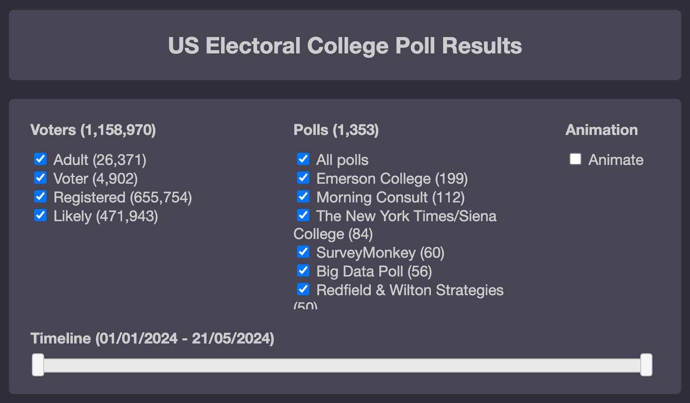

US Election 2024 Polling Visualisation
View the Interactive Presidential Poll
Note: The source for the polling data, projects.fivethirtyeight.com, is no longer active. Data shown in the screenshots below is based on a historical sample dataset.
About
This project was developed to address significant shortcomings in existing US 2024 presidential election polling visualisation websites. While many sites display polling data, they suffer from several critical limitations that make comprehensive analysis difficult.
The Problem
Despite the abundance of election polling websites, most share these fundamental issues:
- No trend tracking over time - None provide a way to visualise how poll results change and evolve over specific time periods
- Limited polling transparency - Few share crucial details like poll sources/sponsors, sample sizes, or voter types
- Conservative electoral projections - Most sites refused to assign electoral college votes unless there was a clear winner (typically >2-2.5% margin), preventing users from seeing which way states are actually leaning
- Cumbersome state-level analysis - While some allow drilling down to state details, it requires clicking through multiple pages, making comparative analysis difficult
The Solution
This visualisation addresses each of these problems with a comprehensive, single-page solution:
1. Time-Based Trend Analysis
- Interactive timeline allowing users to view polling trends over any specified time period
- Animation feature that graphically shows how electoral map and vote counts change over a specified time period
- Historical data tracking from multiple polling periods
2. Complete Polling Transparency
- Detailed poll information including sources, sponsors, sample sizes, and voter types (Adult, Registered, Likely, etc.)
- Interactive poll selection - users can include/exclude specific polls from the visualisation
- Pollster-by-pollster breakdown showing which organisations contributed to each state's data
3. Committed Electoral Projections
- Full electoral assignment - votes allocated to candidates regardless of margin size
- Gradient colour coding creating a choropleth map where lighter colours indicate closer races
- Clear percentage differences displayed prominently for each state
- Real-time electoral vote tracking showing the path to 270
4. Comprehensive Single-Page Interface
- Multi-level visualisation combining:
- Overall electoral college vote totals with progress bar
- Geographic map view with state-by-state colouring
- Detailed data table with sortable columns
- Interactive tooltips showing historical charts for each state
- Seamless drill-down from high-level overview to detailed state analysis without page navigation
- Responsive design accommodating different levels of detail on one screen
Features
- Real-time data aggregation from multiple polling sources
- Voter demographic filtering (Adult, Voter, Registered, Likely Voter)
- Animated timeline playback showing electoral evolution
- Interactive map with hover details and click-through functionality
- Sortable data table with comprehensive state-by-state metrics
- Polling methodology transparency with full source attribution
Screenshots
Options
- Filter by voter type and polls
- Select date range
- Start/stop animation

- Select date range
- Start/stop animation
Overview
- Visual view of progress to 270 electoral votes
- Histogram showing vote distribution
- Histogram showing vote distribution
Map
- Interactive map showing polling data for ALL states
- Hover details with key metrics for each state
- Hover details with key metrics for each state
Results Table
- State-by-state breakdown of polling data
- Poll details, sponsors, voter types, time-based charts (via tooltips)
- Poll details, sponsors, voter types, time-based charts (via tooltips)